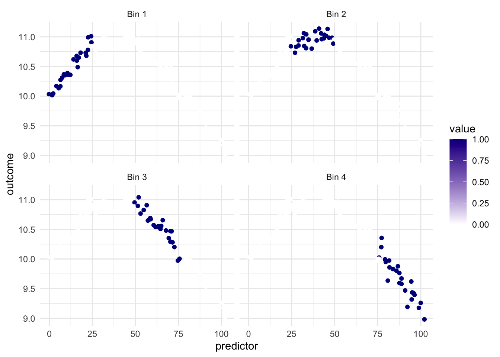

11 Binning
11.1 Binning
Binning, is one way to represent a curve that makes it useful in modeling content since it allows us to model non-linear relationships between predictors and outcomes. This is a trained method.
Being able to transform a numeric variable that has a non-linear relationship with the outcome into one or more variables that do have linear relationships with the outcome is of great importance, as many models wouldn’t be able to work with these types of variables effectively themselves. Below is a toy example of one such variable
Here we have a non-linear relationship. It is a fairly simple one, the outcome is high when the predictor takes values between 25 and 50, and outside the ranges, it takes over values. Given that this is a toy example, we do not have any expert knowledge regarding what we expect the relationship to be outside this range. The trend could go back up, it could go down or flatten out. We don’t know.
Below we see the way each of the new variables activates different areas of the domain.
What we see in this example is that the regions appear to be evenly spaced over the observed values of the predictor. This is neither and good nor bad thing, but something we need to think about. Ideally, we want the different regions to represent something shared within them. If the cuts are happening at non-ideal locations we don’t get the full benefit. See below for such an example

Ideally, we would want the region with the highest values of outcome to be in the same region. but It appears to be split between Bin 2 and Bin 3.
Below is a chart of how well using evenly split binning works when using it on our toy example. We notice that using binning doesn’t work that well for this type of data. And it makes sense, binning will naturally create a step function like we see below, and if your predictor doesn’t have that shape, you are unlikely to see as good performance as with splines Chapter 12 or polynomial expansion Chapter 13.
Imagine we have a different data set, where the relationship between predictor and outcomes isn’t as continuous, but instead has some breaks in it.
The evenly spaced cut points don’t give us good performance, since they didn’t happen to align with the breaks in the data. What we can do instead is to use a more supervised method of finding these splits. Such as using a CART model of xgboost model, to find the optimal breaks in the data. This would make the method supervised and outcome-dependent. Below is an example where we use a CARt model.
While these results look promising, there are a couple of things that are worth remembering. Firstly, this is not a silver bullet, as we still need to tune the method, to find the optimal value for the model we are fitting. Secondly, this type of data is not seen that much in the wild, and if you are seeing them in your application, there is a good chance that you can manually encode this information without having to resort to these methods.
11.2 Pros and Cons
11.2.1 Pros
- Works fast computationally
- Behaves predictably outside the range of the predictors
- If cuts are placed well, it can handle sudden changes in distributions
- Interpretable
- doesn’t create correlated features
11.2.2 Cons
- The inherent rounding that happens, can lead to loss of performance and interpretations
- arguably less interpretable than binning
- can produce a lot of variables
11.3 R Examples
We will be using the ames data set for these examples.
library(recipes)
library(modeldata)
ames |>
select(Lot_Area, Year_Built)# A tibble: 2,930 × 2
Lot_Area Year_Built
<int> <int>
1 31770 1960
2 11622 1961
3 14267 1958
4 11160 1968
5 13830 1997
6 9978 1998
7 4920 2001
8 5005 1992
9 5389 1995
10 7500 1999
# ℹ 2,920 more rows{recipes} has the function step_discretize() for just this occasion.
bin_rec <- recipe(~ Lot_Area + Year_Built, data = ames) |>
step_discretize(Lot_Area, Year_Built)
bin_rec |>
prep() |>
bake(new_data = NULL) |>
glimpse()Rows: 2,930
Columns: 2
$ Lot_Area <fct> bin4, bin4, bin4, bin3, bin4, bin3, bin1, bin1, bin1, bin2,…
$ Year_Built <fct> bin2, bin2, bin2, bin2, bin3, bin3, bin3, bin3, bin3, bin3,…If you don’t like the default number of breaks created, you can use the num_breaks = 6 argument to change it.
bin_rec <- recipe(~ Lot_Area + Year_Built, data = ames) |>
step_discretize(Lot_Area, Year_Built, num_breaks = 6)
bin_rec |>
prep() |>
bake(new_data = NULL) |>
glimpse()Rows: 2,930
Columns: 2
$ Lot_Area <fct> bin6, bin5, bin6, bin5, bin6, bin4, bin1, bin1, bin1, bin2,…
$ Year_Built <fct> bin2, bin3, bin2, bin3, bin5, bin5, bin5, bin4, bin4, bin5,…This step technically creates a factor variable, but we can turn it into a series of indicator functions with step_dummy()
bin_rec <- recipe(~ Lot_Area + Year_Built, data = ames) |>
step_discretize(Lot_Area, Year_Built, num_breaks = 6) |>
step_dummy(Lot_Area, Year_Built, one_hot = TRUE)
bin_rec |>
prep() |>
bake(new_data = NULL) |>
glimpse()Rows: 2,930
Columns: 12
$ Lot_Area_bin1 <dbl> 0, 0, 0, 0, 0, 0, 1, 1, 1, 0, 0, 0, 0, 0, 0, 0, 0, 0, …
$ Lot_Area_bin2 <dbl> 0, 0, 0, 0, 0, 0, 0, 0, 0, 1, 0, 1, 0, 0, 1, 0, 0, 0, …
$ Lot_Area_bin3 <dbl> 0, 0, 0, 0, 0, 0, 0, 0, 0, 0, 0, 0, 1, 0, 0, 0, 0, 0, …
$ Lot_Area_bin4 <dbl> 0, 0, 0, 0, 0, 1, 0, 0, 0, 0, 1, 0, 0, 1, 0, 0, 0, 0, …
$ Lot_Area_bin5 <dbl> 0, 1, 0, 1, 0, 0, 0, 0, 0, 0, 0, 0, 0, 0, 0, 0, 1, 1, …
$ Lot_Area_bin6 <dbl> 1, 0, 1, 0, 1, 0, 0, 0, 0, 0, 0, 0, 0, 0, 0, 1, 0, 0, …
$ Year_Built_bin1 <dbl> 0, 0, 0, 0, 0, 0, 0, 0, 0, 0, 0, 0, 0, 0, 0, 0, 0, 0, …
$ Year_Built_bin2 <dbl> 1, 0, 1, 0, 0, 0, 0, 0, 0, 0, 0, 0, 0, 0, 0, 0, 0, 0, …
$ Year_Built_bin3 <dbl> 0, 1, 0, 1, 0, 0, 0, 0, 0, 0, 0, 0, 0, 0, 0, 0, 0, 0, …
$ Year_Built_bin4 <dbl> 0, 0, 0, 0, 0, 0, 0, 1, 1, 0, 1, 1, 0, 1, 1, 0, 1, 0, …
$ Year_Built_bin5 <dbl> 0, 0, 0, 0, 1, 1, 1, 0, 0, 1, 0, 0, 1, 0, 0, 1, 0, 0, …
$ Year_Built_bin6 <dbl> 0, 0, 0, 0, 0, 0, 0, 0, 0, 0, 0, 0, 0, 0, 0, 0, 0, 1, …